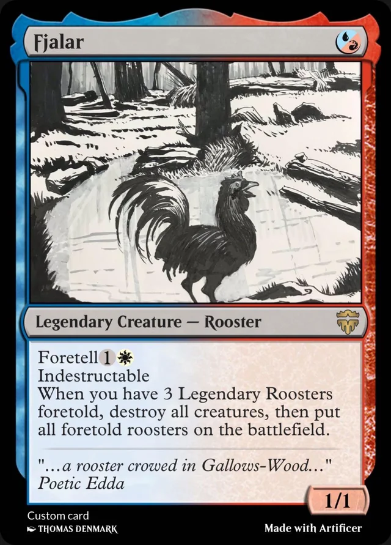

Fried Fjalar Fingers

This chicken can be tough to take down, but the tender meat makes it all worth it
Nothing beats some juicy fried chicken, and it's even better when you know you've helped to save the world. Finding him in the woods can be tough - if you hear him crow, it's too late!
Ingredients
- One mythical rooster
- One egg (does not need to come from mythical chicken)
- Flour
- Breadcrumbs
- Oil for frying
Steps
- Locate and kill Fjalar in the Gallows-wood.
- Cut breastmeat into strips.
- Place flour and breadcrumbs in two shallow dishes side by side. In a separate dish, beat egg.
- Heat oil in a large deep pot over medium heat.
- Cook strips in oil for 6-8 minutes until golden brown.
- Enjoy with your favorite dipping sauce!